library(tidyverse)
library(gt)One-Way ANOVA
Learning Objectives
- Chapter 5
- Explain the one-way ANOVA model for observational studies and randomized experiments.
- State and interpret nested hypotheses.
- Compute and interpret the pooled variance estimate \(s_p^2\).
- Conduct pairwise \(t\)-tests using the pooled variance.
- Set up and interpret the ANOVA \(F\)-test using the extra-sum-of-squares framework.
- Read a nested ANOVA table produced by R.
- Check ANOVA assumptions with residual plots.
- Describe the random-effects model and the intraclass correlation.
Case Studies
case0501 <- read_csv("https://dcgerard.github.io/stat_302/data/case0501.csv") |>
mutate(Diet = factor(Diet, levels = c("NP", "N/N85", "N/R50", "R/R50", "lopro", "N/R40")))
case0502 <- read_csv("https://dcgerard.github.io/stat_302/data/case0502.csv") |>
mutate(Judge = factor(Judge, levels = c("Spock's", "A", "B", "C", "D", "E", "F")))Case Study 5.1.1: Diet Restriction and Longevity
- Restricting caloric intake can dramatically increase life expectancy in animals.
- Randomized experiment: female mice assigned at random to one of six diet groups.
| Label | Diet |
|---|---|
| NP | Unlimited nonpurified standard diet |
| N/N85 | Normal diet before and after weaning; controlled at 85 kcal/wk after (serves as the control) |
| N/R50 | Normal before weaning; restricted to 50 kcal/wk after |
| R/R50 | Restricted to 50 kcal/wk both before and after weaning |
| N/R50 lopro | Like N/R50, but dietary protein decreased with advancing age |
| N/R40 | Normal before weaning; severely restricted to 40 kcal/wk after |
The response is lifetime in months. We are interested in:
- Are any of the diets different from each other in terms of longevity?
- Do controls (N/N85) live longer than those on nonpurified diets (NP)?
- Does restricting diets from 85 kcal/wk (N/N85) to 50 kcal/wk (N/R50) increase lifetime?
- Does Further restriction from 50 kcal/wk (N/R50) to 40 kcal/wk (N/R40) result in even more increase lifetime?
- Does lowering protein (N/R50 lopro) reduce lifetime compare to those already on a restricted diet (N/R50)?
- Does restriction both before and after weaning (R/R50) increase lifetime relative to just after weaning (N/R50)?
Pairwise comparisons of interest:
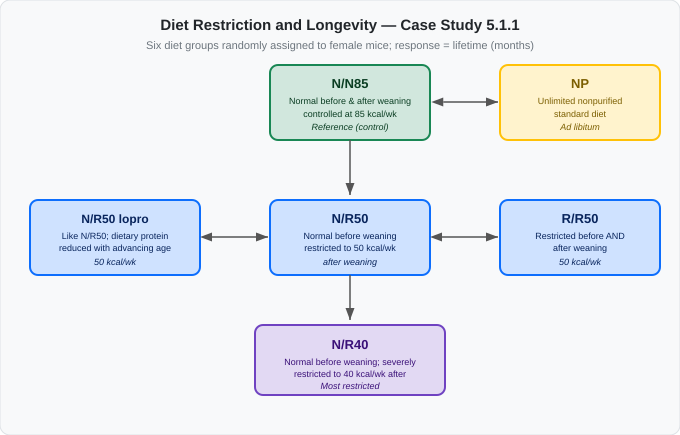
Relationship among the six diet groups. Arrows connect pairwise relationships of interest where there is only one condition that differs between diets. The slash represents pre- and post-weaning diets.
case0501 |>
ggplot(aes(x = Diet, y = Lifetime)) +
geom_boxplot() +
labs(y = "Lifetime (months)", x = "Diet group")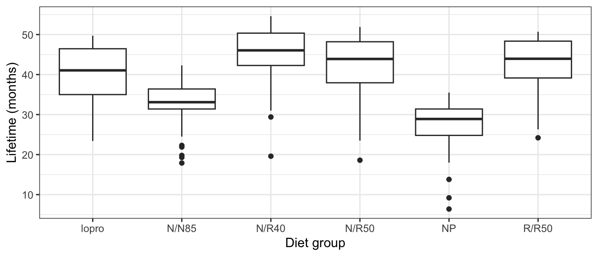
case0501 |>
group_by(Diet) |>
summarise(n = n(),
Mean = mean(Lifetime),
SD = sd(Lifetime),
Median = median(Lifetime)) |>
gt() |>
fmt_number(columns = c(3, 4, 5), decimals = 1)| Diet | n | Mean | SD | Median |
|---|---|---|---|---|
| NP | 49 | 27.4 | 6.1 | 28.9 |
| N/N85 | 57 | 32.7 | 5.1 | 33.1 |
| N/R50 | 71 | 42.3 | 7.8 | 43.9 |
| R/R50 | 56 | 42.9 | 6.7 | 44.0 |
| lopro | 56 | 39.7 | 7.0 | 41.0 |
| N/R40 | 60 | 45.1 | 6.7 | 46.0 |
Case Study 5.1.2: The Spock Conspiracy Trial
- 1968: Dr. Benjamin Spock tried in Boston for encouraging draft resistance (Vietnam War).
- Defense argued the trial judge (“Spock’s judge”) systematically underrepresented women on jury venires.
- Compared this judge’s venires with six other Boston-area district judges (A–F).
- Observational study: judge assignment to cases was not randomized.
- Response:
Percent= percentage of women on each venire.
We are interested in:
- Is Spock’s judge’s mean percent-women lower than the other judges?
- Are the other judges’ means all the same?
- Important to add context that Spock’s judge might be illegally removing women from the venire.
ggplot(case0502, aes(x = Judge, y = Percent)) +
geom_boxplot() +
labs(y = "Percent women on venire")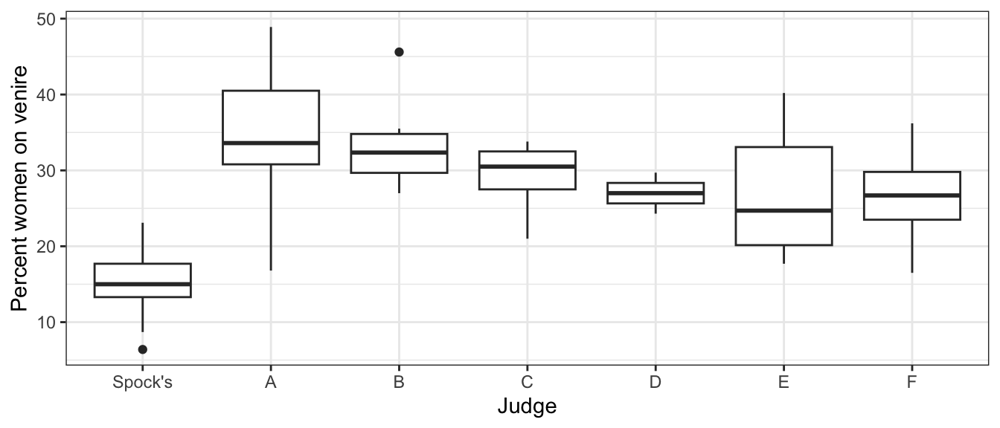
The Statistical Model
In each case study we are comparing means across \(I\) groups. We observe \(n_i\) individuals in group \(i\), for a total of \(n = n_1 + n_2 + \cdots + n_I\) observations.
Notation:
| Symbol | Meaning |
|---|---|
| \(\mu_i\) | True population mean for group \(i\), \(i = 1, \ldots, I\) |
| \(Y_{ij}\) | Observed value for the \(j\)th individual in group \(i\) |
| \(\varepsilon_{ij}\) | Individual-specific noise for the \(j\)th individual in group \(i\): mean 0, variance \(\sigma^2\) |
Model: \[Y_{ij} = \mu_i + \varepsilon_{ij}\]
- Each observed value = true group mean + random individual-level noise.
- Noise captures everything unexplained: genetic variation between mice, measurement error, day-to-day fluctuation in a judge’s venire, etc.
- Key restriction — equal variance: \(\sigma^2\) is the same for every group and every individual.
- A mouse in the N/R40 group has the same noise variance as a mouse in NP; they only differ in expected lifetime.
- This is the \(I\)-group generalization of the pooled two-sample \(t\)-test (Chapter 2).
Spock trial interpretation:
- \(\mu_1\) = true mean percent-women for Spock’s judge across all possible venires
- \(\mu_i\) = true mean percent-women for judge \(i\), \(i = 2, \ldots, 7\) (judges A–F)
- \(Y_{ij}\) = observed percent women on venire \(j\) of judge \(i\)
- \(\varepsilon_{ij}\) = random variation in how that particular venire was drawn
Observational vs. randomized: - The model equation \(Y_{ij} = \mu_i + \varepsilon_{ij}\) looks the same in both the Spock trial and the longevity study.
But only in the longevity study can we interpret any causal association (diet and lifetime).
E.g., if \(\mu_{NP}\) is the mean lifetime of mice on the NP diet, and \(\mu_{N/N85}\) is the mean lifetime of the mice on the N/N85 diet, then \(\delta = \mu_{N/N85} - \mu_{NP}\) is the treatment effect.
That is, \(\delta\) is how much longer, on average, a mouse would live if given the N/N85 diet over the NP diet.
Hypotheses
Pairwise Hypotheses
Test whether any specific pair of means differs: \[H_0: \mu_2 = \mu_5, \qquad H_A: \mu_2 \neq \mu_5\]
With \(I = 7\) groups there are \(\binom{7}{2} = 21\) possible pairwise tests.
Omnibus Hypothesis (“Are any means different?”)
\[H_0: \mu_1 = \mu_2 = \mu_3 = \mu_4 = \mu_5 = \mu_6 = \mu_7\] \[H_A: \text{at least one } \mu_i \neq \mu_j\]
One Group vs. the Rest
\[H_0: \mu_1 = \tfrac{1}{6}(\mu_2 + \mu_3 + \mu_4 + \mu_5 + \mu_6 + \mu_7)\] \[H_A: \mu_1 \neq \tfrac{1}{6}(\mu_2 + \mu_3 + \mu_4 + \mu_5 + \mu_6 + \mu_7)\]
This asks: Is Spock’s judge’s mean different from the average of the other judges?
Estimation
Group Sample Means
Estimate \(\mu_i\) with the group sample mean: \[\bar{Y}_{i\bullet} = \frac{1}{n_i}\sum_{j=1}^{n_i} Y_{ij}\]
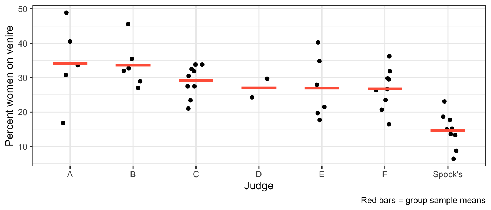
Pooled Variance
- Each group has its own sample SD \(s_i\) = spread of observations within that group.
- Same true variance \(\sigma^2\) assumed for every group \(\Rightarrow\) combine the within-group estimates into one more accurate estimate.
- Weight each group by information contributed — more observations, more weight:
\[s_p^2 = \frac{(n_1-1)s_1^2 + (n_2-1)s_2^2 + \cdots + (n_I-1)s_I^2} {(n_1-1) + (n_2-1) + \cdots + (n_I-1)}\]
- Numerator: each \((n_i-1)s_i^2\) = sum of squared deviations from group \(i\)’s mean; summed = total within-group variation.
- Denominator \(\nu = n - I\) = total degrees of freedom (lose one df per group for estimating each group’s mean).
- So \(s_p^2\) = average within-group variance.
Two observations:
- Weighted average of the within-group variance estimates, weighted by their degrees of freedom.
- When \(I = 2\) this reduces exactly to the pooled variance from Chapter 2.
Testing Pairwise Differences
To test \(H_0: \mu_i = \mu_j\) vs \(H_A: \mu_i \neq \mu_j\), we build a \(t\)-statistic in three steps.
Step 1 — Distribution of the difference under \(H_0\). Each group mean is approximately normal: \(\bar{Y}_{i\bullet} \sim N(\mu_i,\; \sigma^2/n_i)\). Under \(H_0\) (\(\mu_i = \mu_j\)), the two means are independent, so their difference is: \[\bar{Y}_{i\bullet} - \bar{Y}_{j\bullet} \;\sim\; N\!\left(0,\; \sigma^2\!\left(\tfrac{1}{n_i} + \tfrac{1}{n_j}\right)\right)\]
Step 2 — Standardize. Dividing by the true standard deviation gives a standard normal: \[\frac{\bar{Y}_{i\bullet} - \bar{Y}_{j\bullet}} {\sigma\sqrt{1/n_i + 1/n_j}} \;\sim\; N(0,1)\]
Step 3 — Estimate \(\sigma\). We don’t know \(\sigma\), so we substitute the pooled estimate \(s_p\). Replacing a known standard deviation with an estimate inflates uncertainty, and the result follows a \(t\) distribution:
\[t^* = \frac{\bar{Y}_{i\bullet} - \bar{Y}_{j\bullet}}{s_p\sqrt{1/n_i + 1/n_j}} \;\sim\; t_\nu \quad \text{under } H_0\]
where \(\nu = n - I\).
The advantage over running separate two-sample \(t\)-tests is that we use all the data to estimate \(\sigma^2\), giving more degrees of freedom and a more accurate variance estimate.
A 95% confidence interval for \(\mu_i - \mu_j\) is:
\[\bar{Y}_{i\bullet} - \bar{Y}_{j\bullet} \;\pm\; t_{\nu}(0.975) \cdot s_p\sqrt{1/n_i + 1/n_j}\]
WarningMultiple Comparisons
Running 21 pairwise tests at \(\alpha = 0.05\) inflates the overall Type I error rate well above 5%. Chapter 6 covers methods that control for multiple comparisons. For now, we treat each pairwise test independently and note the concern.
The ANOVA \(F\)-Test
For the omnibus hypothesis (\(H_0\): all means equal vs \(H_A\): at least two differ), a single summary statistic is needed. The ANOVA \(F\)-test compares two nested models by asking: how much does model fit improve when we allow separate group means?
Full and Reduced Models
| Reduced model (\(H_0\)) | Full model (\(H_A\)) | |
|---|---|---|
| Means | \(\mu_1 = \mu_2 = \cdots = \mu_I = \mu\) (one shared mean) | \(\mu_1, \mu_2, \ldots, \mu_I\) (separate means) |
| Estimates | \(\hat{\mu} = \bar{Y}_{\bullet\bullet}\) | \(\hat{\mu}_i = \bar{Y}_{i\bullet}\) |
| # parameters | 1 | \(I\) |
Where \[ Y_{i\bullet} = \frac{1}{n_i}\sum_{j=1}^{n_i}Y_{ij} \] \[ \bar{Y}_{\bullet\bullet} = \frac{1}{n}\sum_{i=1}^I\sum_{j=1}^{n_i}Y_{ij}, \] \[ n = \sum_{i=1}^{I}n_i \]
For the Spock data (\(I = 7\) judges), here is what each model predicts for each group:
| Group | Judge | Full model estimates | Reduced model estimates |
|---|---|---|---|
| 1 | Spock’s | \(\bar{Y}_{1\bullet}\) | \(\bar{Y}_{\bullet\bullet}\) |
| 2 | Judge A | \(\bar{Y}_{2\bullet}\) | \(\bar{Y}_{\bullet\bullet}\) |
| 3 | Judge B | \(\bar{Y}_{3\bullet}\) | \(\bar{Y}_{\bullet\bullet}\) |
| 4 | Judge C | \(\bar{Y}_{4\bullet}\) | \(\bar{Y}_{\bullet\bullet}\) |
| 5 | Judge D | \(\bar{Y}_{5\bullet}\) | \(\bar{Y}_{\bullet\bullet}\) |
| 6 | Judge E | \(\bar{Y}_{6\bullet}\) | \(\bar{Y}_{\bullet\bullet}\) |
| 7 | Judge F | \(\bar{Y}_{7\bullet}\) | \(\bar{Y}_{\bullet\bullet}\) |
- Full model: each group gets its own sample mean as prediction.
- Spock’s venires predicted by Spock’s average, Judge A’s by Judge A’s, etc.
- 7 free parameters — one per judge.
- Reduced model: every observation predicted by the same grand average \(\bar{Y}_{\bullet\bullet}\) (mean over all 46 venires).
- This is the \(H_0\)-is-true model: if all judges have the same expected percent-women, the best single prediction is the overall average.
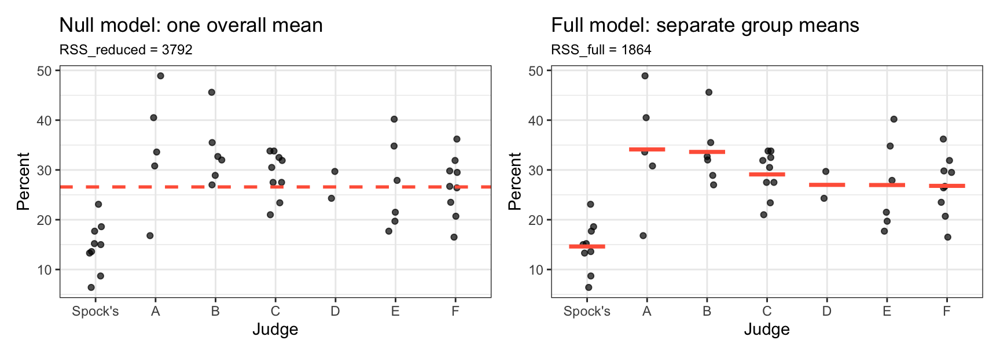
What is a residual? The distance between an observed value and the model’s prediction for it:
Full model residual: \(Y_{ij} - \bar{Y}_{i\bullet}\)
- how far observation \((i,j)\) is from its group’s mean
Reduced model residual: \(Y_{ij} - \bar{Y}_{\bullet\bullet}\)
- how far observation \((i,j)\) is from the grand mean
Intuitively, if the groups really have different means:
- Full model residuals are small — each observation is close to its group mean.
- Reduced model residuals are large — e.g. Spock’s observations are far from the grand mean.
Sums of Squared Residuals
The residual sum of squares (RSS) for each model is:
\[RSS_{full} = \sum_i \sum_j (Y_{ij} - \bar{Y}_{i\bullet})^2, \quad df_{full} = n - I\]
\[RSS_{reduced} = \sum_i \sum_j (Y_{ij} - \bar{Y}_{\bullet\bullet})^2, \quad df_{reduced} = n - 1\]
Each RSS adds up all the squared residuals across every observation.
- a small RSS means predictions are close to the data
- a large RSS means they are far away.
- Both RSS values involve squaring (so positive and negative residuals don’t cancel) and summing (so we get a single overall measure).
The extra sum of squares (ESS) measures how much the fit improves when we go from the reduced model to the full model:
\[ESS = RSS_{reduced} - RSS_{full}, \quad df_{extra} = I - 1\]
NOTE: \(RSS_{reduced} \geq RSS_{full}\) (so \(ESS \geq 0\) always)
- Reduced model is a special case of the full model (set all \(\mu_i\) equal).
- Full model has more flexibility, so it can never fit worse — always at least as good.
What does ESS tell us?
- \(H_0\) true (means equal): separate group means barely improve fit \(\Rightarrow\) ESS positive but small.
- Means truly differ: full model fits much better \(\Rightarrow\) ESS large.
- The \(F\)-test formalizes what “small” and “large” mean.
The plots below illustrate this for the Spock data. Red bars/lines show the model’s fitted means; larger gaps between points and those lines = larger residuals (blue dashed lines).
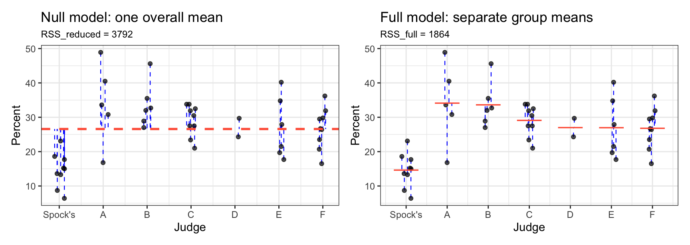
The squared residuals are much smaller under the full model, confirming that group means differ substantially.
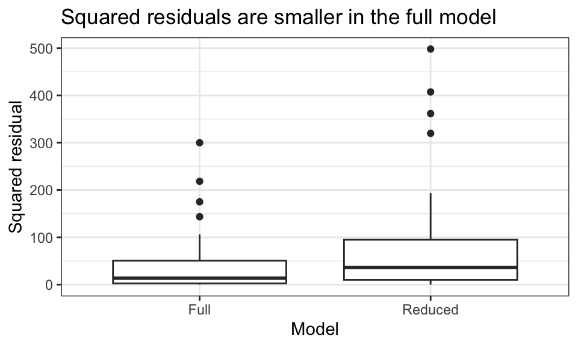
The \(F\)-Statistic
- \(H_0\) true: both \(ESS/df_{extra}\) and \(RSS_{full}/df_{full} = s_p^2\) estimate the same \(\sigma^2\) \(\Rightarrow\) ratio near 1.
- \(H_A\) true: means differ, \(ESS\) inflated \(\Rightarrow\) ratio above 1.
\[F = \frac{ESS / df_{extra}}{s_p^2} = \frac{ESS / (I-1)}{RSS_{full} / (n-I)}\]
Under \(H_0\), \(F \sim F_{I-1,\; n-I}\). The \(p\)-value uses only the upper tail (large \(F\) is evidence against \(H_0\)).
The \(F\)-Distribution
The \(F\) distribution is parameterized by two degrees of freedom: numerator (\(df_1\)) and denominator (\(df_2\)). Below are a few shapes:
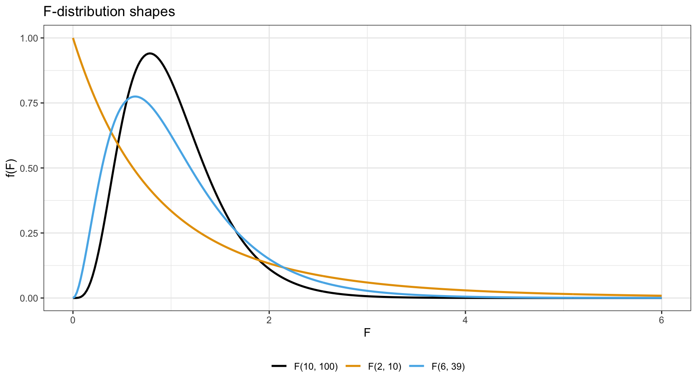
\(p\)-Value for the Spock Omnibus Test
The Spock data has \(I = 7\) judges and \(n = 46\) venires, so \(df_{extra} = 6\) and \(df_{full} = 39\).
case0502 |>
mutate(muhat_null = mean(Percent)) |> # null mean
group_by(Judge) |>
mutate(muhat_alt = mean(Percent)) |> # alt mean
ungroup() |>
mutate(
resid_null = Percent - muhat_null,
resid_alt = Percent - muhat_alt
) |>
summarize(
rss_null = sum(resid_null^2),
rss_alt = sum(resid_alt^2),
n = n(),
I = n_distinct(Judge)
) |>
mutate(
df_null = n - 1,
df_full = n - I,
df_extra = df_null - df_full, ## I - 1
ess = rss_null - rss_full,
sp2 = rss_full / df_full,
fstat = (ess / df_extra) / sp2
) ->
df| rss_null | rss_alt | n | I | df_null | df_full | df_extra | ess | sp2 | fstat |
|---|---|---|---|---|---|---|---|---|---|
| 3,791.53 | 1,864.45 | 46 | 7 | 45 | 39 | 6 | 1,927.08 | 47.81 | 6.72 |
pf(df$fstat, df1 = df$df_extra, df2 = df$df_full, lower.tail = FALSE)[1] 6.095823e-05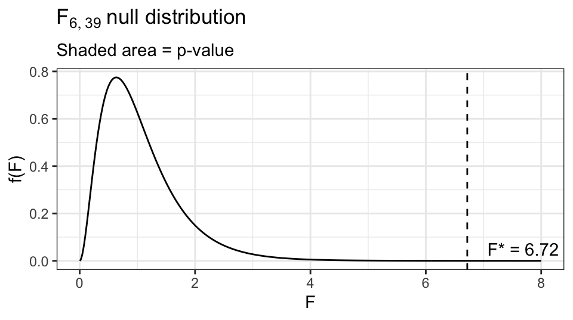
A Hierarchy of Models
An F-test can be used to compare any two nested models.
In the Spock example, we had three nested models:
- \(H_1\): all means equal \((\mu)\)
- \(H_2\): Spock’s judge differs from a common mean for the rest \((\mu_\text{Spock}, \mu_\text{others})\)
- \(H_3\): all seven means free \((\mu_1, \mu_2, \ldots, \mu_7)\)
Here is what each model predicts for each judge in the Spock data.
\(H_1\) vs. \(H_2\) — Is Spock’s judge different from the rest?
- \(H_1: \mu_1 = \cdots = \mu_7\) (all same)
- \(H_2: \mu_1 \neq \mu_2 = \cdots = \mu_7\) (Spock is different)
| Group | Judge | \(H_1\) (reduced) | \(H_2\) (full) |
|---|---|---|---|
| 1 | Spock’s | \(\bar{Y}_{\bullet\bullet}\) | \(\bar{Y}_{1\bullet}\) |
| 2 | Judge A | \(\bar{Y}_{\bullet\bullet}\) | \(\bar{Y}_{0}\) |
| 3 | Judge B | \(\bar{Y}_{\bullet\bullet}\) | \(\bar{Y}_{0}\) |
| 4 | Judge C | \(\bar{Y}_{\bullet\bullet}\) | \(\bar{Y}_{0}\) |
| 5 | Judge D | \(\bar{Y}_{\bullet\bullet}\) | \(\bar{Y}_{0}\) |
| 6 | Judge E | \(\bar{Y}_{\bullet\bullet}\) | \(\bar{Y}_{0}\) |
| 7 | Judge F | \(\bar{Y}_{\bullet\bullet}\) | \(\bar{Y}_{0}\) |
- \(\bar{Y}_{\bullet\bullet}\) = grand mean of all 46 venires.
- \(\bar{Y}_{0}\) = average percent-women across all venires of judges A–F (groups 2–7).
- \(H_2\) has 2 parameters: Spock’s judge (\(\bar{Y}_{1\bullet}\)) and one pooled mean for the other six (\(\bar{Y}_{0}\)).
Plots below: the drop in RSS from \(H_1\) to \(H_2\) is the ESS for this test.
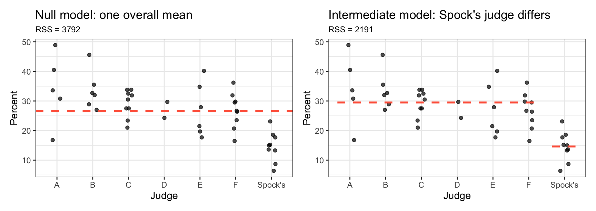
\(H_2\) vs. \(H_3\) — Do judges A–F differ among themselves?
- \(H_2: \mu_1 \neq \mu_2 = \cdots = \mu_7\) (Spock is different)
- \(H_3:\) At least one \(\mu_i \neq \mu_j\) for \(i,j\in \{2,\ldots,7\}\)
| Group | Judge | \(H_2\) (reduced) | \(H_3\) |
|---|---|---|---|
| 1 | Spock’s | \(\bar{Y}_{1\bullet}\) | \(\bar{Y}_{1\bullet}\) |
| 2 | Judge A | \(\bar{Y}_{0}\) | \(\bar{Y}_{2\bullet}\) |
| 3 | Judge B | \(\bar{Y}_{0}\) | \(\bar{Y}_{3\bullet}\) |
| 4 | Judge C | \(\bar{Y}_{0}\) | \(\bar{Y}_{4\bullet}\) |
| 5 | Judge D | \(\bar{Y}_{0}\) | \(\bar{Y}_{5\bullet}\) |
| 6 | Judge E | \(\bar{Y}_{0}\) | \(\bar{Y}_{6\bullet}\) |
| 7 | Judge F | \(\bar{Y}_{0}\) | \(\bar{Y}_{7\bullet}\) |
- Asks: after accounting for Spock’s judge, do the remaining six judges differ from each other?
- Plots below compare \(H_2\) (reduced) vs. \(H_3\); ESS here captures only variation among judges A–F.
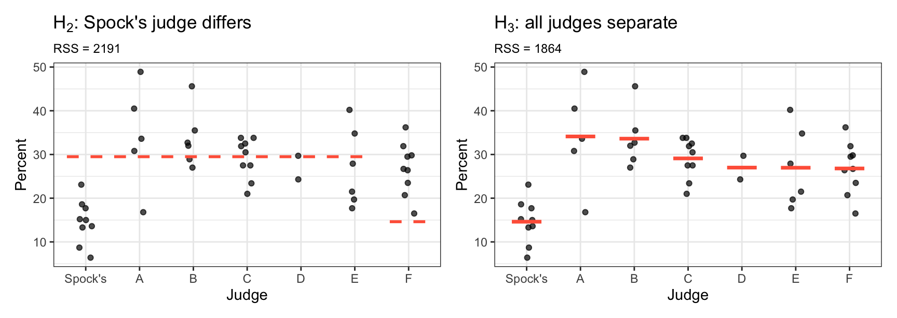
- Always fit both models using all the data — never discard Spock’s observations, even when comparing only judges A–F.
- Matters for the variance estimate:
- Subset of 39 venires (A–F only): \(df = 32\).
- All 46 venires with \(s_p^2\) from the full model: \(df = 39\).
- More df \(\Rightarrow\) better variance estimate \(\Rightarrow\) more powerful test.
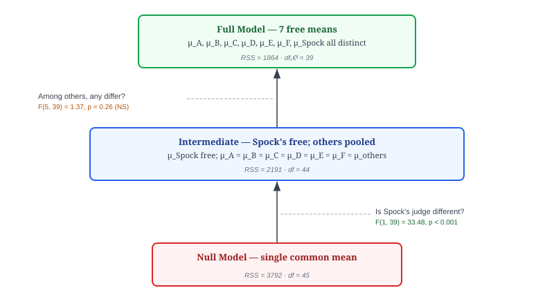
The full sequential ANOVA table for the Spock data is:
| Model | \(df_{RSS}\) | RSS | \(df_{extra}\) | ESS | \(F\) | \(p\)-value |
|---|---|---|---|---|---|---|
| All same | 45 | 3792 | ||||
| Spock’s differs | 44 | 2191 | 1 | 1601 | 33.48 | <0.001 |
| All different | 39 | 1864 | 5 | 326 | 1.37 | 0.26 |
Conclusions:
- Strong evidence that Spock’s judge has a different (lower) mean than the other judges (\(F_{1,39} = 33.48\), \(p < 0.001\)).
- No evidence that the six non-Spock judges differ among themselves (\(F_{5,39} = 1.37\), \(p = 0.26\)).
One-Way ANOVA in R
Checking the Grouping Variable
Before fitting, confirm the grouping variable is a factor or character:
class(case0502$Judge)[1] "factor"- If numeric,
aov()treats it as a continuous predictor, not a grouping variable. - Fix with
as.factor()ormutate(Judge = factor(Judge)).
Omnibus \(F\)-Test with aov() and tidy()
aout_h3 <- aov(Percent ~ Judge, data = case0502)
tidy(aout_h3)# A tibble: 2 × 6
term df sumsq meansq statistic p.value
<chr> <dbl> <dbl> <dbl> <dbl> <dbl>
1 Judge 6 1927. 321. 6.72 0.0000610
2 Residuals 39 1864. 47.8 NA NA The table has two rows:
| Row | \(df\) | Sum Sq | Mean Sq | \(F\) | \(p\)-value |
|---|---|---|---|---|---|
Judge |
\(df_{extra} = I - 1\) | \(ESS\) | \(ESS / df_{extra}\) | \(F\)-stat | \(p\) |
Residuals |
\(df_{full} = n - I\) | \(RSS_{full}\) | \(RSS_{full}/df_{full} = s_p^2\) |
Pairwise Comparisons
ptout <- pairwise.t.test(x = case0502$Percent,
g = case0502$Judge,
p.adjust.method = "none")
ptout
Pairwise comparisons using t tests with pooled SD
data: case0502$Percent and case0502$Judge
Spock's A B C D E
A 1.1e-05 - - - - -
B 6.4e-06 0.9049 - - - -
C 7.2e-05 0.2007 0.2226 - - -
D 0.0275 0.2258 0.2483 0.6997 - -
E 0.0016 0.0955 0.1038 0.5616 0.9953 -
F 0.0006 0.0651 0.0689 0.4846 0.9707 0.9638
P value adjustment method: none Each cell is the raw (unadjusted) \(p\)-value for that pair. Note that pairwise.t.test() uses \(s_p^2\) from all groups to form the \(t\)-statistic, even when comparing just two groups.
Nested Model Comparisons with anova()
To test \(H_2\) (Spock’s differs; others same) versus \(H_1\) (all same):
case0502 <- case0502 |>
mutate(isSpock = Judge == "Spock's")
aout_h2 <- aov(Percent ~ isSpock, data = case0502)
aout_h1 <- aov(Percent ~ 1, data = case0502)anova(aout_h2, aout_h3) |>
tidy()# A tibble: 2 × 7
term df.residual rss df sumsq statistic p.value
<chr> <dbl> <dbl> <dbl> <dbl> <dbl> <dbl>
1 Percent ~ isSpock 44 2191. NA NA NA NA
2 Percent ~ Judge 39 1864. 5 326. 1.37 0.258The rows are:
| Row | \(df_{RSS}\) | RSS | \(df_{extra}\) | ESS | \(F\) | \(p\) |
|---|---|---|---|---|---|---|
| Model 1 (reduced) | \(df_{reduced}\) | \(RSS_{reduced}\) | ||||
| Model 2 (full) | \(df_{full}\) | \(RSS_{full}\) | \(df_{extra}\) | ESS | \(F\)-stat | \(p\) |
Full Sequential ANOVA Table
Compare all three models at once:
anova(aout_h1, aout_h2, aout_h3) |>
tidy()# A tibble: 3 × 7
term df.residual rss df sumsq statistic p.value
<chr> <dbl> <dbl> <dbl> <dbl> <dbl> <dbl>
1 Percent ~ 1 45 3792. NA NA NA NA
2 Percent ~ isSpock 44 2191. 1 1601. 33.5 0.00000103
3 Percent ~ Judge 39 1864. 5 326. 1.37 0.258 This produces the sequential table shown in the hierarchy section above. Row 2 tests \(H_1\) vs \(H_2\); Row 3 tests \(H_2\) vs \(H_3\).
WarningUnnecessary Detail
Note that in R, it is customary to use the fullest model’s estimate of \(\sigma^2\) in the denominator for all \(F\)-statistics in an ANOVA table. Thus, we get slightly different results for
anova(aout_h1, aout_h2)$F[[2]][1] 32.14538anova(aout_h1, aout_h2, aout_h3)$F[[2]][1] 33.48143- Both \(F\)-statistics evaluate \(H_1\) versus \(H_2\)
- The first estimates \(\sigma^2\) from the \(H_2\) fit.
- The second estimates \(\sigma^2\) from the \(H_3\) fit.
- The idea is that the least biased (though, not necessarily the best) estimate of \(\sigma^2\) comes from the most complicated model.
- In practice, I don’t think this matters that much. But it is something to be aware of.
Assumptions and Diagnostics
The same three assumptions from the two-sample \(t\)-test apply, in the same order of importance:
- Independence of observations.
- Equal variance across all groups.
- Normality (approximately symmetric, no severe outliers).
New tool for checking assumptions 2 and 3: residual plots.
The residual for observation \((i,j)\) under the full model is: \[e_{ij} = Y_{ij} - \bar{Y}_{i\bullet}\]
Plotting residuals removes the group-mean structure, letting us focus on the variation about the mean without visual clutter from the differences in means between groups.
ImportantWhich Model to Evaluate?
Evaluate a rich model.
In the Spock case, the one where each judge has its own mean.
In the longevity case, the one where each diet has its own mean.
The reduced models might be wrong. This would violate the independence assumption, since residuals within groups would be correlated due to the group structure.
Residual Plots in R
The quickest way is plot() applied to an aov() object:
par(mfrow = c(2, 2))
plot(aout_h3)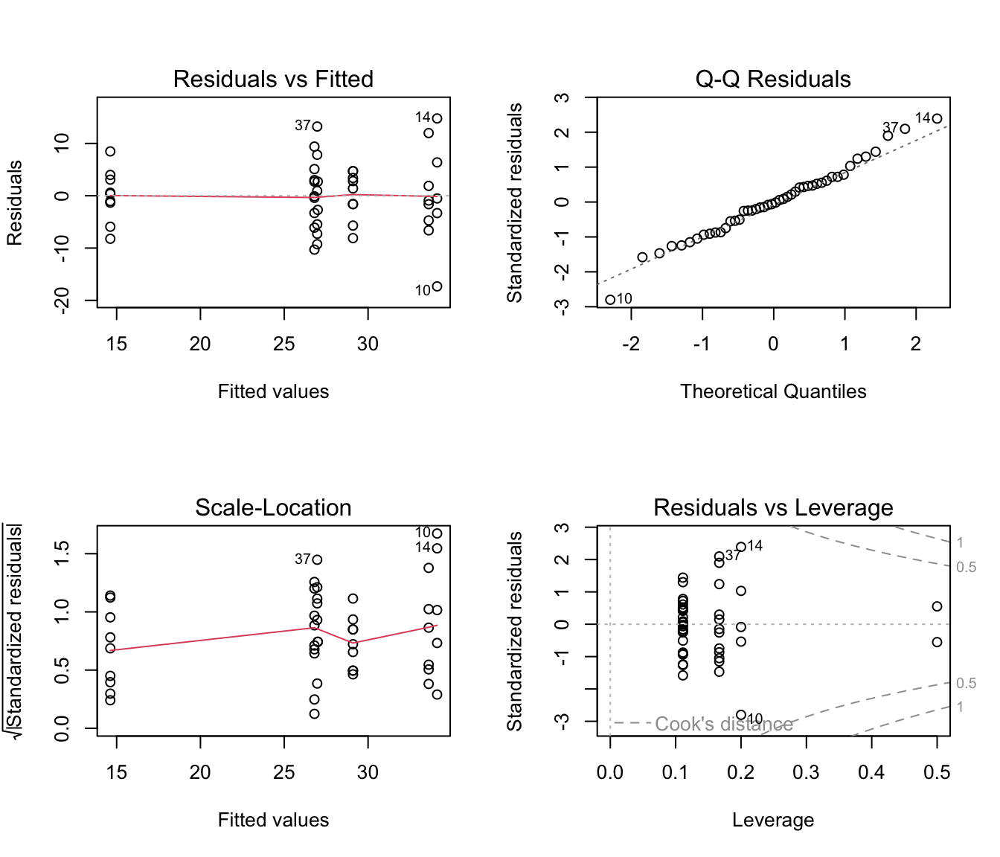
par(mfrow = c(1, 1))The two most important panels:
- Residuals vs. Fitted: residuals (\(y\)-axis) vs. group means (\(x\)-axis). Look for unequal spread across the fitted values.
- Normal Q-Q: QQ-plot of residuals. Look for departures from a straight line (skew, heavy tails, outliers).
Manual ggplot2 Residual Plots
Use
augment()to get the fitted values and the residuals.You can then use ggplot2 code as you like.
aug_full <- augment(aout_h3)
p_rv_fit <- ggplot(aug_full, aes(x = .fitted, y = .resid)) +
geom_point() +
geom_hline(yintercept = 0, linetype = "dashed") +
labs(x = "Fitted values (group means)",
y = "Residuals",
title = "Residuals vs. fitted")
p_rv_grp <- ggplot(aug_full, aes(x = Judge, y = .resid)) +
geom_boxplot() +
geom_hline(yintercept = 0, linetype = "dashed") +
labs(y = "Residuals", title = "Residuals by group")
p_rv_fit + p_rv_grp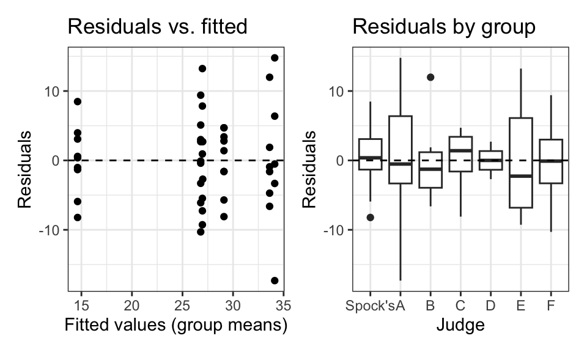
ggplot(aug_full, aes(sample = .resid)) +
geom_qq() +
geom_qq_line() +
labs(title = "Normal Q-Q plot of residuals")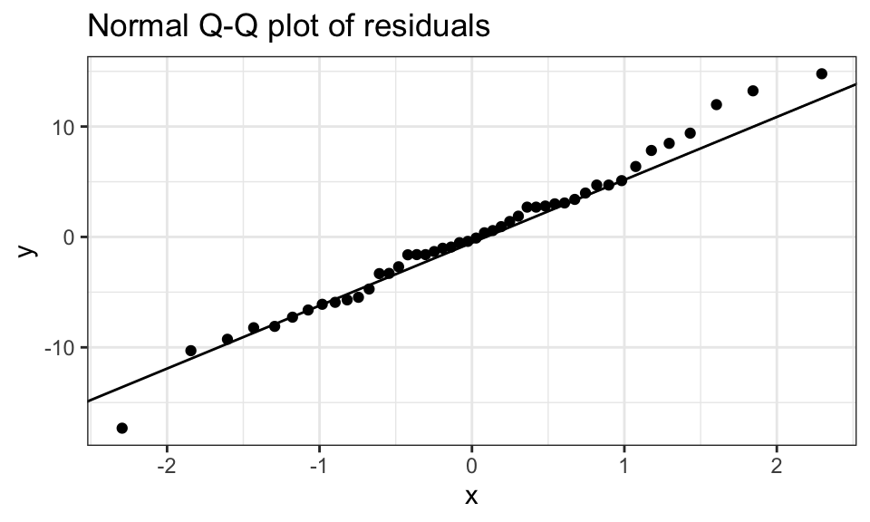
What to Look For
Unequal variance appears as fan-shaped spread in the Residuals vs. Fitted plot — larger spread for larger fitted values (or vice versa):
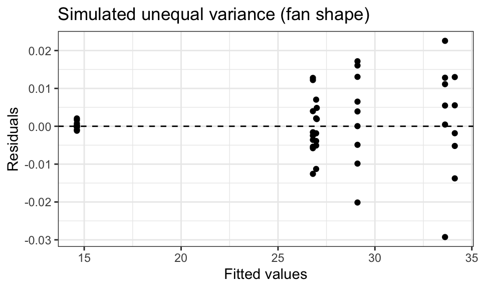
An outlier appears as an isolated point far from 0:
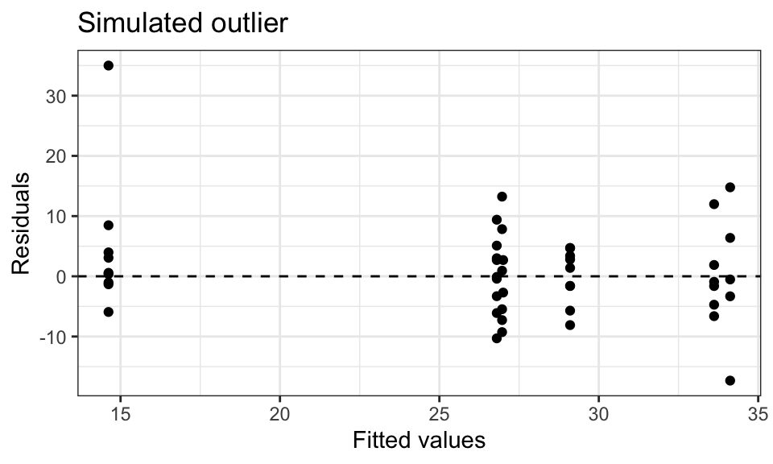
Solutions mirror Chapter 3:
| Violation | Solution |
|---|---|
| Independence | ANOVA with blocking (Chapters 12–13) |
| Unequal variance | Welch-style ANOVA; log transformation |
| Non-normality / outliers | Transformation; run with and without outlier; Kruskal-Wallis |
Random Effects
- Fixed effects (so far): the groups (judges, diets) are the specific groups of interest — we compare these particular groups.
- Random effects: groups are not of direct interest.
- They are a random sample from a larger population of groups.
- Goal: infer variability among groups in that population.
- Example — quality control: output of 7 randomly selected machines.
- Don’t care about those 7 specific machines.
- Want machine-to-machine variability across the whole factory floor.
- When groups are a random sample from a larger population, use the random-effects model.
The Random-Effects Model
The model is written in two layers:
\[Y_{ij} = \mu_i + \varepsilon_{ij}, \quad \text{var}(\varepsilon_{ij}) = \sigma^2\] \[\mu_i = \mu + \xi_i, \quad \text{var}(\xi_i) = \sigma_p^2\]
- Line 1: identical to the fixed-effects model.
- Line 2: each group mean \(\mu_i\) is itself random — overall average \(\mu\) plus a random group-specific deviation \(\xi_i\) (mean 0, variance \(\sigma_p^2\)).
Every observation has two sources of randomness:
- Within-group noise \(\varepsilon_{ij}\): how much individual \(j\) in group \(i\) differs from its group’s mean (variance \(\sigma^2\)).
- Between-group noise \(\xi_i\): how much group \(i\)’s mean differs from the overall mean \(\mu\) (variance \(\sigma_p^2\)).
If \(\sigma_p^2 = 0\), all groups have the same true mean (\(\mu_i = \mu\) for all \(i\)), and there is no between-group variability at all.
Hypotheses: \[H_0: \sigma_p^2 = 0 \quad \text{(no between-group variability — all group means equal } \mu\text{)}\] \[H_A: \sigma_p^2 > 0 \quad \text{(some groups have higher/lower means than others)}\]
We run the same \(F\)-test as before. Under \(H_0\), the \(F\)-statistic has the same \(F_{I-1,\, n-I}\) null distribution.
Why Use This Model?
- In one-way ANOVA, the \(F\)-test \(p\)-value is identical for fixed or random groups. So why bother?
- In more complex models — multiple random factors, or the same individuals in multiple groups — treating groups as random gives different (generally better) estimates and inference.
- The one-way case is the simplest introduction to this framework.
Intraclass Correlation (ICC)
The ICC measures the proportion of total variance explained by group membership:
\[\text{ICC} = \frac{\hat\sigma_p^2}{\hat\sigma_p^2 + \hat\sigma^2}\]
Total variance of any \(Y_{ij}\) = \(\sigma_p^2 + \sigma^2\) (between-group + within-group).
ICC = fraction of that total coming from between-group differences.
ICC close to 1: most variation is between groups — knowing the group an observation belongs to tells you most of what you need to know about its value.
ICC close to 0: most variation is within groups — group membership explains very little; individual-level noise dominates.
Exercises
1. The diet study (Case Study 5.1.1) is a randomized experiment, while the Spock trial (Case Study 5.1.2) is an observational study.
- For each study, identify the explanatory variable and the response variable.
- For each study, state whether a causal conclusion is justified if the \(F\)-test is significant. Explain.
2. Using the diet data (case0501):
- Fit the one-way ANOVA model with
aov()and display the ANOVA table. - State the null and alternative hypotheses for the omnibus \(F\)-test.
- Report the \(F\)-statistic, degrees of freedom, and \(p\)-value. What do you conclude?
3. From the ANOVA table in Exercise 2, identify (by number, not name):
- \(RSS_{full}\) and \(df_{full}\).
- \(s_p^2\) (the pooled variance estimate).
- \(ESS\) and \(df_{extra}\).
- The \(F\)-statistic — verify it equals \(ESS/df_{extra}\) divided by \(s_p^2\).
4. For the Spock data, use pairwise.t.test() to obtain all pairwise \(p\)-values (unadjusted).
- How many pairwise comparisons are there?
- Which pairs, if any, show evidence of a difference at \(\alpha = 0.05\)?
- Why is it potentially problematic to use \(\alpha = 0.05\) for each test individually when conducting this many comparisons?
5. Fit the three nested models for the Spock data (\(H_1\), \(H_2\), \(H_3\)) and reproduce the sequential ANOVA table using anova().
- What is Spock’s judge’s estimated percent-women on the venire?
- What is the pooled estimate for the other six judges?
- Interpret the two \(F\)-tests in the sequential table. What overall conclusion do you draw about the Spock trial jury selection?
6. For the diet study, test whether the two most calorie-restricted groups (N/R40 and R/R50) differ in mean lifetime from the control group (N/N85).
- Create a new binary variable that indicates whether the mouse is in one of those two groups vs. the control group.
- Fit the appropriate reduced model and use
anova()to test the hypothesis. - Interpret the result.
7. For the Spock data, make the three residual plots:
- Residuals vs. fitted values.
- Residuals vs. judge (boxplots).
- QQ-plot of residuals.
Comment on whether the equal-variance and normality assumptions appear reasonable.
8. Explain in your own words why the pooled variance estimate \(s_p^2\) uses all groups (not just the two being compared) when conducting a pairwise \(t\)-test in the one-way ANOVA framework. What is the practical benefit of this approach?
9. For the Spock data, the omnibus \(F\)-test gives a very small \(p\)-value.
- Does a significant omnibus \(F\)-test tell you which pairs of means differ? Explain.
- After seeing a significant omnibus result, a student decides to examine only the comparison that looks most different in the boxplot and ignores the others. What is the statistical problem with this strategy?
10. Consider a one-way ANOVA with \(I = 4\) groups and \(n = 40\) total observations.
- What are \(df_{extra}\) and \(df_{full}\)?
- If \(RSS_{full} = 720\) and \(ESS = 180\), compute \(s_p^2\), the \(F\)-statistic, and the \(p\)-value.
- What is the \(p\)-value from
pf()in R?
11. Describe the difference between a fixed-effects and a random-effects one-way ANOVA model. For each scenario below, state which model is more appropriate and why.
- Comparing mean test scores across 5 specific schools that were chosen because they use different curricula.
- Comparing output quality across 6 machines randomly selected from a factory floor, to estimate how much machine-to-machine variability exists.
- Comparing soil nitrogen levels across 8 randomly chosen plots in a large field.
12. A researcher fits a one-way ANOVA with \(I = 5\) groups and finds \(RSS_{full} = 400\) (df = 45), \(RSS_{reduced} = 520\) (df = 49).
- Compute \(ESS\) and \(df_{extra}\).
- Compute \(s_p^2\) and the \(F\)-statistic.
- Compute the \(p\)-value. Is there evidence of group differences?
- Compute the ICC estimate, given that the estimated between-group variance is \(\hat\sigma_p^2 = 6.0\).